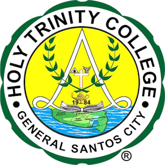

HOLY TRINITY COLLEGE OF GENERAL SANTOS CITY
COMPUTER SYSTEMS SERVICING (CSS) LABORATORY
CSS Equipment Borrowing and Reservation Management System
Welcome to the CSS Equipment Management System. Easily check equipment availability, reserve tools, and manage borrowing transactions in one convenient place.
System Features
The system is designed to make CSS laboratory equipment borrowing and reservation easier, faster, and more organized.
Equipment Management
Keep track of available CSS laboratory equipment and their current status.
Equipment Reservation
Allow students to reserve equipment before using it in the laboratory.
Borrowing Transactions
Record equipment borrowing and returning transactions efficiently.